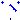
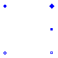
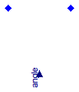

Extends from Modelica.Icons.Package (Icon for standard packages).
| Name | Description |
|---|---|
| SpacePhasor | Physical transformation: three phase <-> space phasors |
|  Rotator | Rotates space phasor |

| Type | Name | Default | Description |
|---|---|---|---|
| Real | turnsRatio | 1 | Turns ratio |
| Type | Name | Description |
|---|---|---|
| PositivePlug | plug_p | |
| NegativePlug | plug_n | |
| PositivePin | zero | |
| NegativePin | ground | |
| SpacePhasor | spacePhasor |
model SpacePhasor
"Physical transformation: three phase <-> space phasors"
constant Integer m=3 "Number of phases";
constant Real pi=Modelica.Constants.pi;
parameter Real turnsRatio=1 "Turns ratio";
Modelica.SIunits.Voltage v[m] "Instantaneous phase voltages";
Modelica.SIunits.Current i[m] "Instantaneous phase currents";
protected
parameter Real TransformationMatrix[ 2, m]=2/m*
{{cos(+(k - 1)/m*2*pi) for k in 1:m}, {+sin(+(k - 1)/m*2*pi) for k in 1:m}};
parameter Real InverseTransformation[m, 2]=
{{cos(-(k - 1)/m*2*pi), -sin(-(k - 1)/m*2*pi)} for k in 1:m};
public
Modelica.Electrical.MultiPhase.Interfaces.PositivePlug plug_p(final m=m);
Modelica.Electrical.MultiPhase.Interfaces.NegativePlug plug_n(final m=m);
Modelica.Electrical.Analog.Interfaces.PositivePin zero;
Modelica.Electrical.Analog.Interfaces.NegativePin ground;
Machines.Interfaces.SpacePhasor spacePhasor;
equation
v/turnsRatio = plug_p.pin.v - plug_n.pin.v;
i*turnsRatio = +plug_p.pin.i;
i*turnsRatio = -plug_n.pin.i;
m*zero.v = sum(v);
spacePhasor.v_ = TransformationMatrix *v;
//v = fill(zero.v,m) + InverseTransformation*spacePhasor.v_;
-m*zero.i = sum(i);
-spacePhasor.i_ = TransformationMatrix *i;
//-i = fill(zero.i,m) + InverseTransformation*spacePhasor.i_;
ground.v = 0;
end SpacePhasor;

| Type | Name | Description |
|---|---|---|
| SpacePhasor | spacePhasor_a | |
| SpacePhasor | spacePhasor_b | |
| input RealInput | angle |
model Rotator "Rotates space phasor"
constant Real pi=Modelica.Constants.pi;
protected
Real RotationMatrix[2,2] = {{+cos(-angle),-sin(-angle)},{+sin(-angle),+cos(-angle)}};
//Real InverseRotator[2,2] = {{+cos(+angle),-sin(+angle)},{+sin(+angle),+cos(+angle)}};
public
Machines.Interfaces.SpacePhasor spacePhasor_a;
Machines.Interfaces.SpacePhasor spacePhasor_b;
Modelica.Blocks.Interfaces.RealInput angle;
equation
spacePhasor_b.v_ = RotationMatrix*spacePhasor_a.v_;
//spacePhasor_a.v_ = InverseRotator*spacePhasor_b.v_;
spacePhasor_b.i_ + RotationMatrix*spacePhasor_a.i_ = zeros(2);
//spacePhasor_a.i_ + InverseRotator*spacePhasor_b.i_ = zeros(2);
end Rotator;